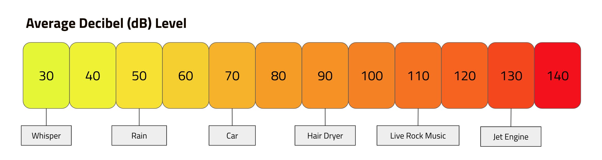

Noise pollution is the intrusion of loud or unwarranted sounds that can detrimentally impact an individual's well-being. Assessing sound involves parameters such as loudness, quantified as sound pressure level measured in decibels (dB). The human auditory range spans from 0 dB to 140 dB, with every 3 dB increase signifying a doubling in sound intensity. The chart below is a decibel chart, with examples of each sound level.
Noise pollution is associated with adverse health effects. [1].
High noise levels increase the risk of individuals experiencing hearing impairment by 30% [2] [3].
Consistent ringing in the ears that affects around 30% of the population, and the risk increases by 6% for every 10 dB increase in average exposure [4] [5].
Exposure to increasing levels of noise pollution is associated with stiffer arteries and reduced vessel flexibility [6].
The impact of sleep disturbances can lead to decreased mental function and increased stress hormone levels [7].
A study found schools near airports that have exposure to high levels of noise (average above 80 dB) resulting in lower reading comprehension levels [6] [8].
Diminished cognitive ability, coupled with the impact of noise pollution itself, can lead to psychological frustration and physiological stress responses, including increased cortisol and adrenaline [9].
Many national governments have legislation and decibel limit values that may apply either nationally or regionally, informed by noise exposure data and noise maps. Guidelines such as the WHO guidelines are public-health oriented and serve as the basis for policy-making. Noise mapping is a valuable tool for assessing and visualizing noise levels across a given region.
San Juan's regulations addressing noise pollution are described in the Public Order Code. Article 2,201 within the Public Order Code specifically outlines the legal framework associated with preventing noise pollution, emphasizing the importance of refraining from emitting or distributing noise that exceeds specified decibel level limits, contingent on the time of day. According to the law, the permissible sound levels are set at 65 decibels between 7 am and 10 pm, and lowered to 55 decibels during nighttime hours.
Learn more about The New Executive Order (2023)1. ^ Practitioner Handbook for Local Noise Action Plans
2. ^ Hearing Impairment Prevalence and Associated Risk Factors in the Hispanic Community Health Study/Study of Latinos
3. ^ Burden of disease from environmental noise: quantification of healthy life years lost in Europe
4. ^ The Echoes of Noise: Residential Exposure to Traffic and Risk of Tinnitus
5. ^ Prevalence, associated factors, and comorbidities of tinnitus in adolescents
6. ^ Noise pollution and its impact on children's health
7. ^ WHO Environmental Noise Guidelines for the European Region: A Systematic Review on Environmental Noise and Effects on Sleep
8. ^ Night time aircraft noise exposure and children's cognitive performance
9. ^ Noise pollution and human cognition: An updated systematic review and meta-analysis of recent evidence